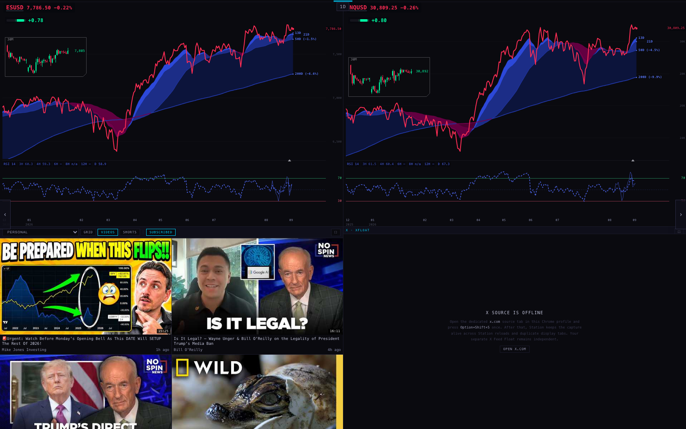
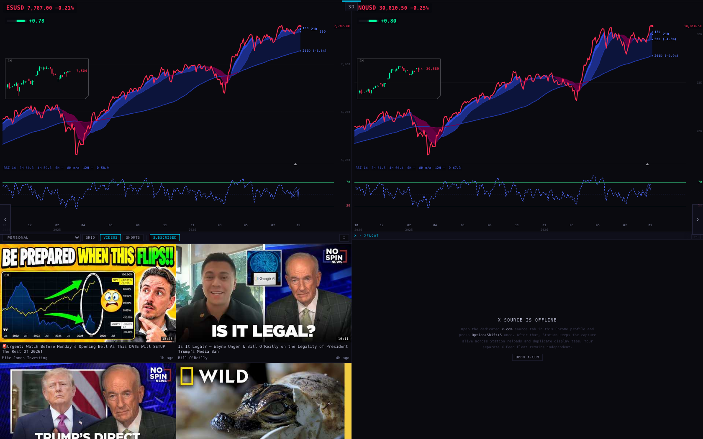
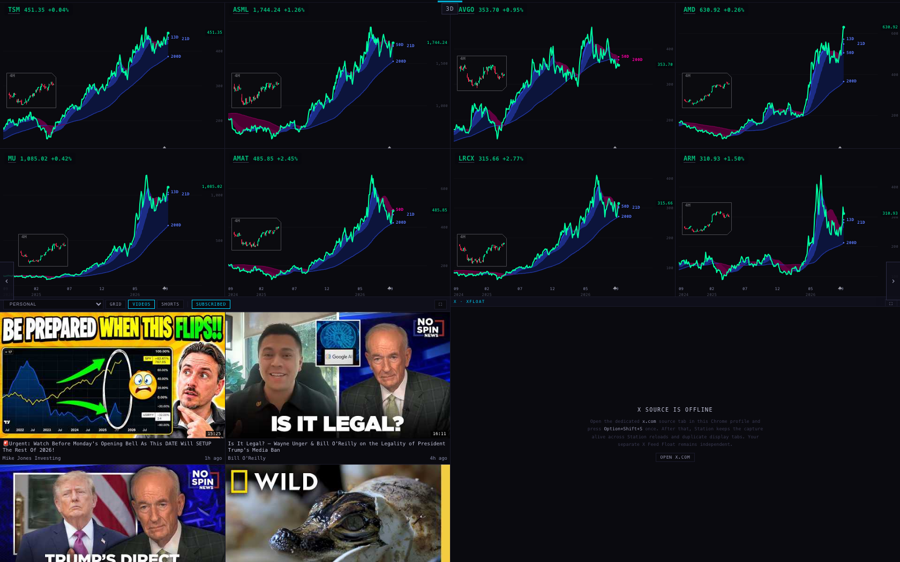
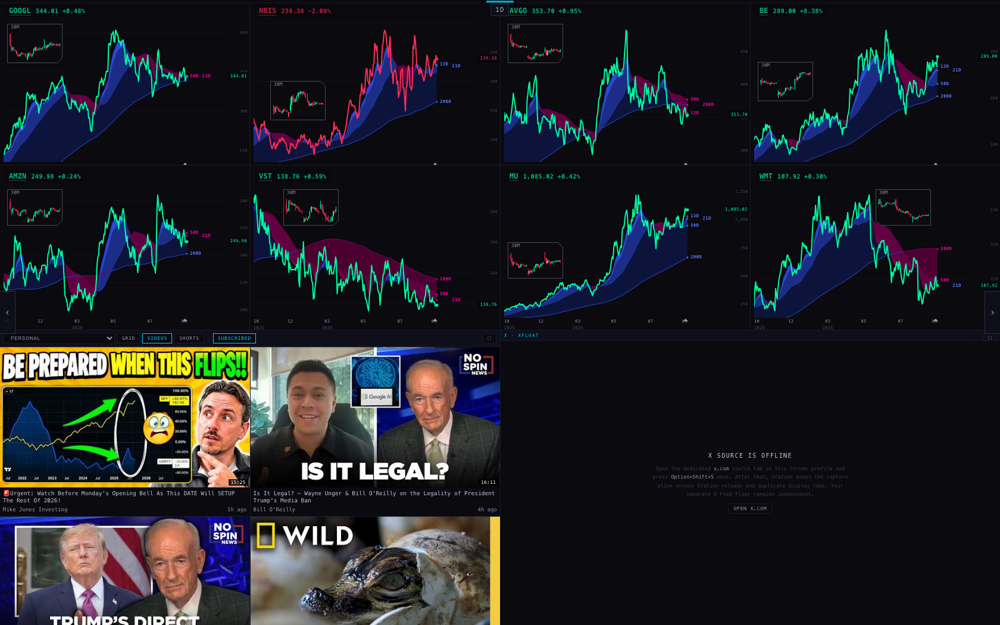
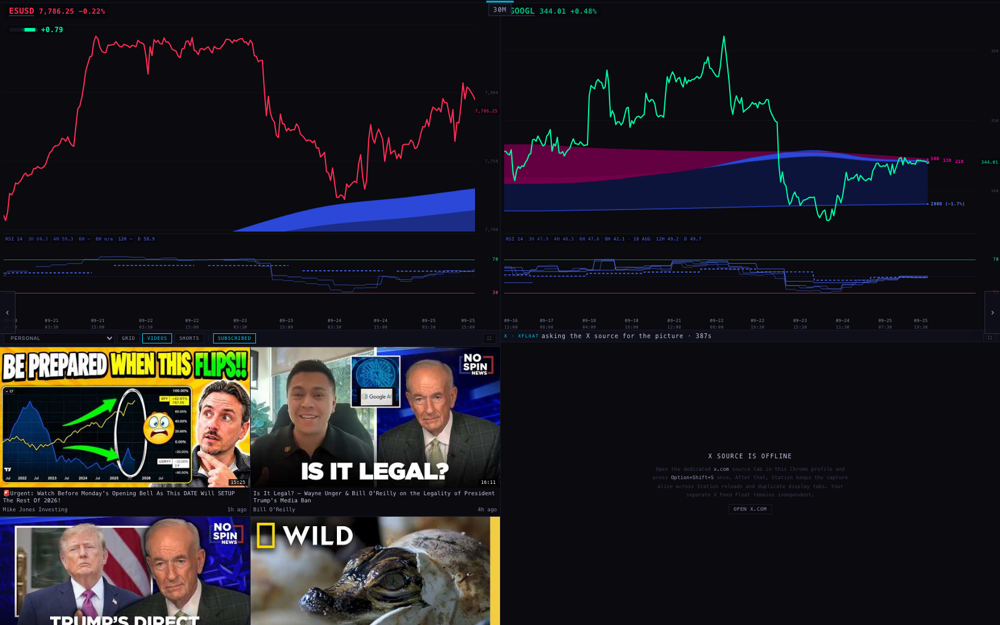

Every Station page that shows two charts now has the six-line RSI fan under both charts. The SPY/QQQ 3-day page and the SPY/QQQ daily page are both on purpose: they come from two separate TradingView layouts of yours. An open Station page already asks for new futures bars every minute, whatever the hour, so when the chart API starts sending Sunday-evening bars they will appear without a reload. No client change was needed for that.
Branch station/fixes-20260927 (on top of O1's five commits, which sit on the live Station 1981096). Pushed to GitHub, not deployed. Nothing on the live Station has changed. Pictures are from a headless browser on this MacBook (never on your screen). The chart API only answers scintillahub.ai, so the test browser's reads went through a small local relay that asks with that address. Read-only; nothing was written anywhere.
"The six-line multi-timeframe RSI fan goes on the Station two-chart pages too — those should have the oscillator." (you, 27 Sep evening)
| Page | Charts | In the lap? | Fan before | Fan now |
|---|---|---|---|---|
| SPY + QQQ (3-day) | SPY/QQQ in market hours, ES/NQ otherwise | day and night | no | yes |
| SPY + QQQ · DAY | SPY/QQQ in market hours, ES/NQ otherwise | day and night | yes (O1) | yes |
| INTRADAY · 30M | SPY or QQQ (ES or NQ outside market hours) + one target | day only, twice a lap | no | yes |
| FOCUS 2 | MU, SNDK | menu only | no | yes |
| INTERNALS | VIX, PCC | menu only | no | yes |
| OSCILLATOR WORKBENCH | MU, QQQ | menu only | no | unchanged (decision 1) |
It is the same fan as on SPY + QQQ · DAY: 3H 4H 6H 8H 12H D, hidden only on a phone-narrow window. The 4-up pages (MACRO · 4H, INTRADAY · 1H) and all 6-up and 8-up pages are unchanged. On FOCUS 2 and INTERNALS a name you type into a slot keeps the fan, and the fan now stays on when you come back to the page in the same session (before, a second visit dropped a menu page's study, the workbench's too).
PCC is a once-a-day Cboe number, so on INTERNALS its fan can only draw the D line; the intraday lines read "—". On ES/NQ, 6H and 12H read "—" and 8H "n/a", as O1 already noted.
Straight from deck/scenes.js. "Leaders" means SPY/QQQ from 09:30 to 16:30 New York time on weekdays and ES/NQ at every other hour (scenes.js:326 and :330). With the default 33-second page time, the day lap is 23 pages (about 12½ minutes) and the night lap 17 pages (about 9½ minutes).
| Page | Timeframe | What it shows | Day lap (04:00–18:00 ET weekdays) | Night lap (18:00–04:00 and weekends) |
|---|---|---|---|---|
| INDEXES · WEEK | 1W | SPY, DIA, QQQ + 5 more; never ES/NQ | not shown | page 1 |
| SPY + QQQ | 3D | the leaders | page 3 (from 1 min 6 s) | page 5 (from 2 min 12 s) |
| INTRADAY · 4H | 4h | both leaders + 4 targets | pages 11 and 21 | not shown |
| INTRADAY · 1H | 1h | one leader (SPY and QQQ take turns by visit) + 3 targets | pages 12 and 22 | not shown |
| INTRADAY · 30M | 30m | one leader (taking turns) + 1 target | pages 13 and 23 | not shown |
| SPY + QQQ · DAY | 1D | the leaders | page 14 (from 7 min 9 s) | page 12 (from 6 min 3 s) |
| INDEX NOW (menu) | 3h | SPY/QQQ 08:00–18:00 ET by the hour, else ES/NQ, + crude | not in the lap; note its own older clock (scenes.js:273) | |
| INDEX LEADERSHIP (menu) | 3h | SPY, QQQ, DIA, IWM, MAGS, SMH | not in the lap | |
| OSCILLATOR WORKBENCH (menu) | 1D | MU, QQQ | not in the lap | |
Yes. Both pages come from your own 25 Sep charting workflow: the 22 TradingView layouts in your "NEW SCINTILLA STATION CHARTING WORKFLOW" tab group, which included a "SPY + QQQ 3D" layout in the 3-day block and a "SPY + QQQ 1D" layout at the start of the daily block. The file says so:
"Nineteen pages in a fixed order … Three slot kinds: … LEADERS — SPY/QQQ in the market session, ESUSD/NQUSD in the other three." (scenes.js:11–26, K3, 25 Sep)
"LEADERS ride the market clock, not the session: SPY/QQQ 09:30–16:30 ET on a weekday, ES/NQ otherwise. 16:30, not 16:00, closes the market: measured on SPY's 30-minute bars, volume falls from 5.9M in the 16:00 bar to 195k at 16:30." (scenes.js:301–304)
"ES/NQ page then SPY/QQQ page appeared back to back — he expected ONE page whose charts switch symbols by session…" (scenes.js:63–67, O1, 27 Sep — that fix merged the daily page with its RSI twin; the 3-day page was a different layout and was left alone)
So on a Sunday night you see ES/NQ twice per lap: at 3-day (page 5) and at daily (page 12), about four minutes apart. One thing you flagged on 25 Sep is still true: your TradingView layout named "SPY + QQQ 1D" actually holds SPY and DIA; the Station page shows SPY and QQQ.
Every chart asks the chart API for a fixed number of bars and, until you zoom, shows all of them (chart/index.html:517 sets the count; chart/index.html:1745 starts the view at the first bar). Measured tonight against the chart API, read-only:
| Pages | Timeframe | Bars | A stock (SPY, NVDA) shows | A future (ESUSD) shows | Lens |
|---|---|---|---|---|---|
| INDEXES · WEEK, MACRO · WEEK | 1W | 157 | 3 years (Sep 2023 →) | 3 years | none |
| TARGETS, SECTORS, SPY + QQQ, MAG 7, AI 1–3, OTHER, BLUE CHIP | 3D | 240 | 2 years (25 Sep 2024 →) | 2 years (7 Oct 2024 →) | 4H: 12 sessions, 48 candles (about 2½ weeks) |
| SPY + QQQ · DAY, OTHER INDEXES · DAY / · RSI, MACRO · DAY, TARGETS · DAY / · RSI | 1D | 240 | 11½ months (13 Oct 2025 →) | 9½ months (9 Dec 2025 →) | 30M: 3 regular sessions, 39 candles (none on MACRO · DAY) |
| MACRO · 4H, INTRADAY · 4H | 4h | 240 | 60 sessions, 12 weeks (2 Jul →) | 7½ weeks (2 Aug →) | none |
| FOCUS 2, INTERNALS, INDEX NOW (menu) | 3h | 240 | 40 sessions, 8 weeks | 173 bars served, 4 weeks | none |
| INTRADAY · 1H | 1h | 240 | 15 sessions, 3 weeks (4 Sep →) | 2 weeks (11 Sep →) | none |
| INTRADAY · 30M | 30m | 240 | 7½ sessions, 9 days (16 Sep →) | 1 week (18 Sep →) | none |
Stock intraday bars include pre- and after-market (04:00–20:00 New York), which is why 240 hourly bars are only 15 sessions. A 3D bar is three calendar days, not three sessions (240 of them span 729 days). The cloud ribbon and the RSI fan read their own longer history and are drawn across whatever window the chart shows, so they are not what makes a chart long.
Keep reading the same bars, so zooming out still works, and open each chart on a shorter window. One small table in the chart pane would do it.
| Timeframe | Now | Suggested first view |
|---|---|---|
| 1W | 157 bars, 3 years | 104 bars, 2 years |
| 3D | 240 bars, 2 years | 120 bars, 1 year |
| 1D | 240 bars, 11½ months | 126 bars, 6 months |
| 4h | 240 bars, 12 weeks | 120 bars, 6 weeks |
| 3h | 240 bars, 8 weeks | 120 bars, 4 weeks |
| 1h | 240 bars, 3 weeks | 80 bars, 1 week |
| 30m | 240 bars, 9 days | 96 bars, 3 sessions |
These are suggestions for you to change, not measurements. The lens (48 or 39 candles) and the RSI fan would not change.
Yes, within about six minutes, with no reload and no change needed. What the code does:
chart/index.html:3316). Nothing on that path looks at the NYSE session, the hour or the weekend (scChartLoad, :2696). The deck only limits how many reads run at once (four; deck/index.html:1410). It never holds a read back by the clock.chart/index.html:896), so a new bar lands between 0 and about 6 minutes after the chart API has it. On the rotating wall each page is up for 33 s and comes back about 9½ minutes later at night, so every visit reads fresh.deck/index.html:1961) from the chart API's /macro route (_provider/provider.js:1302). Tonight it answered with a live futures price stamped 21:30 ET. The pane draws that as a temporary last point after the newest finished bar (chart/index.html:706), so the ES/NQ line already moves on a Sunday evening.chart/index.html:2759).p2-futures-refresh.json, harness/futures-refresh.mjs._indicators/lens-bars.mjs:23), so it never shows Sunday-evening bars. The 4H lens draws 04:00–20:00 (lens-bars.mjs:64), so a Sunday 16:00–20:00 bar would show as a one-candle "Sunday" session. Not changed; futures intraday is on your do-not-change list.Yes, in both directions, because it judges every symbol by the stock market's clock: New York trading days, 04:00–20:00 (chart/index.html:593, :610, :627). Checked by running the pane's own function on these cases:
| Case | Says | Right? |
|---|---|---|
| ES 30m, feed stopped Friday 16:30, now Sunday 21:30 | nothing | wrong: silent, the very case the server fix is about |
| ES 30m, feed stopped Friday, now Monday 03:00 | nothing | wrong: silent until 04:00 (Monday 04:45 it says STALE · 2 d old) |
| ES 30m, working, weekday 17:50 (CME's daily 17:00–18:00 pause) | STALE · 50 min old | wrong: 17:45 to 18:30 every weekday; seen on INTRADAY · 30M until 18:00 |
| ES 30m, Friday 17:50 (futures closed for the weekend) | STALE · 50 min old | wrong: 17:45 to 20:00 on Fridays |
| ES 1h, weekday 17:55 | nothing | right |
| ES 1D or 3D, any Sunday or weekday | nothing | right |
| BTC 1D with no Saturday/Sunday bars, Monday 10:00 | nothing | wrong: the missing weekend bars are never counted |
| GC 4h stopped at Friday 08:00 (as the API serves tonight), Friday 16:30 | STALE · 5 h old | right |
Not changed: the task only allowed a change if polling or drawing needed one, and O1 kept the stale rules exactly as before. The fix would be small: judge futures by CME hours (Sunday 18:00 to Friday 17:00, minus the 17:00–18:00 pause) and crypto around the clock (decision 2).





782 tests run, 764 pass. The 18 that fail are exactly the 18 that already fail on the live Station code 1981096, by name. Nothing new fails. Six new tests: four for the fan on the two-chart pages, two that pin "no market-hours gate on re-reading a chart" and "a Sunday futures quote becomes a temporary point, an equity never does".
Not done: no deploy, no database write, no paid service, nothing on the iMac, nothing under the Indicator Lab. The lens and the futures session behaviour were not touched.